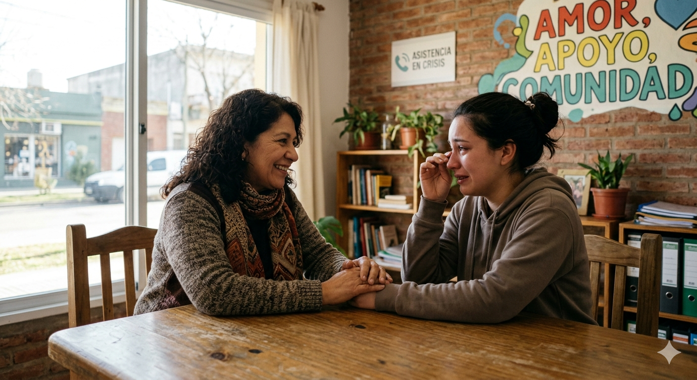

Nuestros Programas
Atención Psicológica Gratuita

Sabemos que cuidar la salud mental es fundamental. Por eso, ofrecemos un espacio seguro y gratuito de escucha y acompañamiento para quienes están atravesando momentos difíciles y no cuentan con los recursos para un servicio privado.
Horarios: Lunes a Viernes de 09:00 a 18:00 hs (Con turno previo).
Apoyo a Jóvenes y Adolescentes

Este proyecto está orientado a adolescentes, jóvenes y adultos que necesiten acompañamiento emocional, apoyo psicológico o espacios de contención ante situaciones personales difíciles.
Buscamos que cada adolescente desarrolle herramientas para su proyecto de vida, fomentando la autoconfianza y la integración social en un ambiente de respeto y contención.
Horarios: Viernes de 16:00 a 19:00 hs.
Talleres de Bienestar

Un espacio dedicado al cuidado integral. Realizamos talleres grupales sobre manejo del estrés, ansiedad, autoestima y habilidades emocionales.
A través de actividades de meditación y charlas de salud mental, buscamos fortalecer los vínculos comunitarios y brindar herramientas para el bienestar diario.
Horarios: Sábados de 10:00 a 12:30 hs.
Asistencia en Crisis

En asistencia en crisis, brindamos acompañamiento inmediato en situaciones críticas, ofreciendo contención y orientación inicial ante emergencias emocionales o duelos.
Nuestro equipo está preparado para intervenir en momentos de vulnerabilidad, asegurando un espacio de escucha segura y confidencial para quienes más lo necesitan.
Atención inmediata: Lunes a Domingo, las 24 hs.
¿A quién va dirigido?
Este proyecto está orientado a adolescentes, jóvenes y adultos que necesiten acompañamiento emocional, apoyo psicológico o espacios de contención ante situaciones personales difíciles.
Participación y voluntariado:
Las personas interesadas pueden participar como voluntarios, colaborando en talleres, actividades comunitarias y programas de apoyo psicológico. También pueden sumarse como beneficiarios solicitando ayuda a través de la sección de contacto.